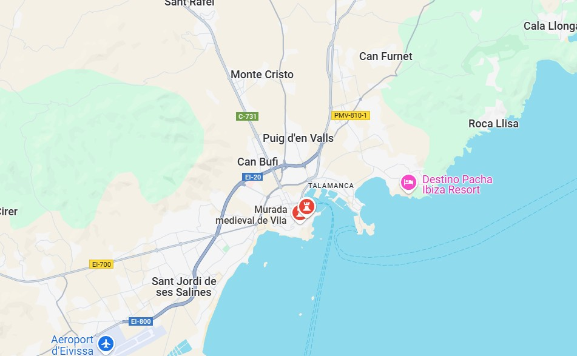

Descripció
Fortificació fenícia posteriorment ampliada pels romans i àrabs. És Patrimoni de la Humanitat per la UNESCO.
Ubicació
ELa fortalesa envolta tot el puig de Vila, la zona més elevada de la capital pitiüsa i s'estén per una superfície de 10 hectàrees, amb un perímetre d'1.800 m. Cadascun dels seus set baluards va ser planificat al detall, per dotar-lo de suficients angles de tir que garantissin la seua defensa.

Imatges